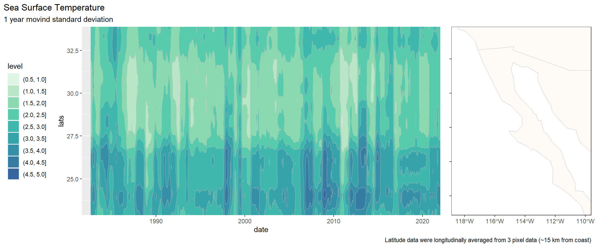
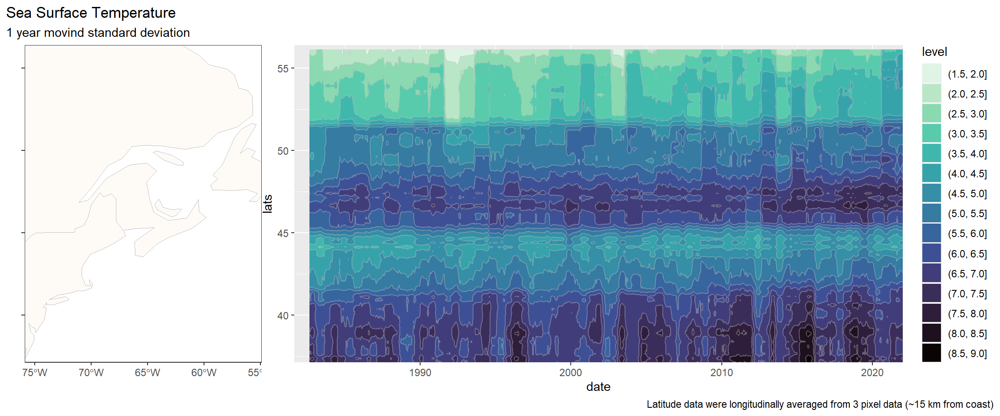
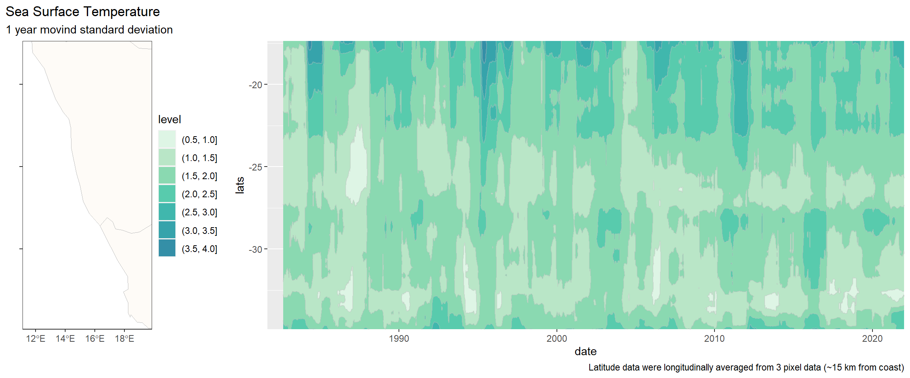
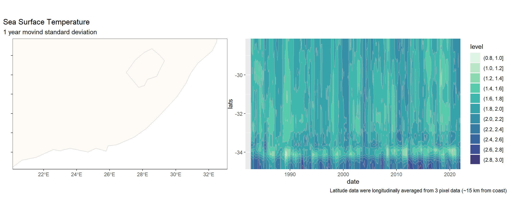
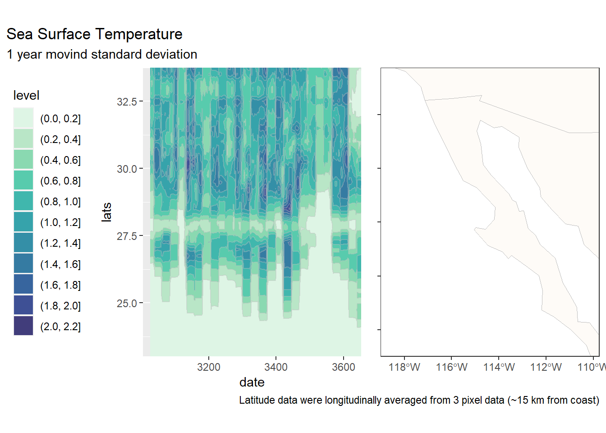
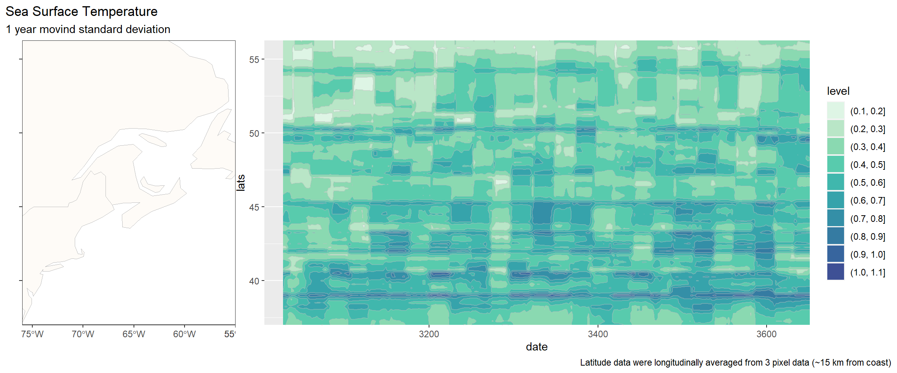
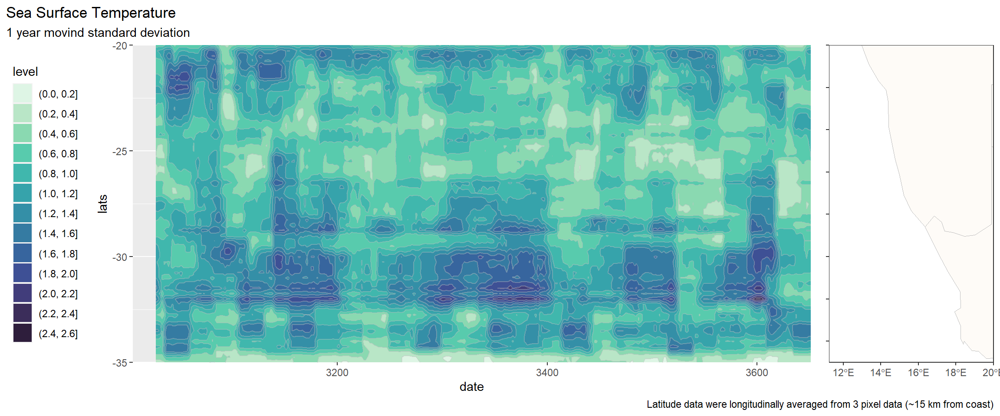
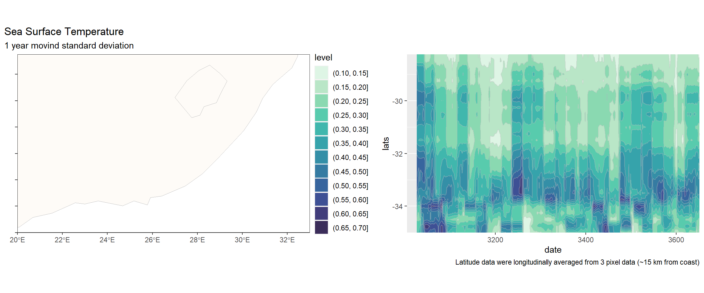

5. Variabilidad linea de costa
1 Descripción general
Caracterización de las variabilidad de temperatura, clorofila y salinidad en las regiones oceanográficas:
- Península de Baja California
- Noroeste del Atlántico Norte
- Costa Oriental de Sudafrica
- Costa Occidental de Sudafrica
Origen de los datos
Temperatura: OISST. 1981 a 2021 Clorofila: CMEMS. 1993 a 2022 Salinidad:
La serie de tiempo diarios de temperatura se encuentran en la carpeta output/maps/time_series/
1.1 Peninsula de baja california

1.2 Atlantico Norte

1.3 Sudafrica


1.4 Peninsula de Baja California

1.5 Atlantico Norte

1.6 Sudafrica

